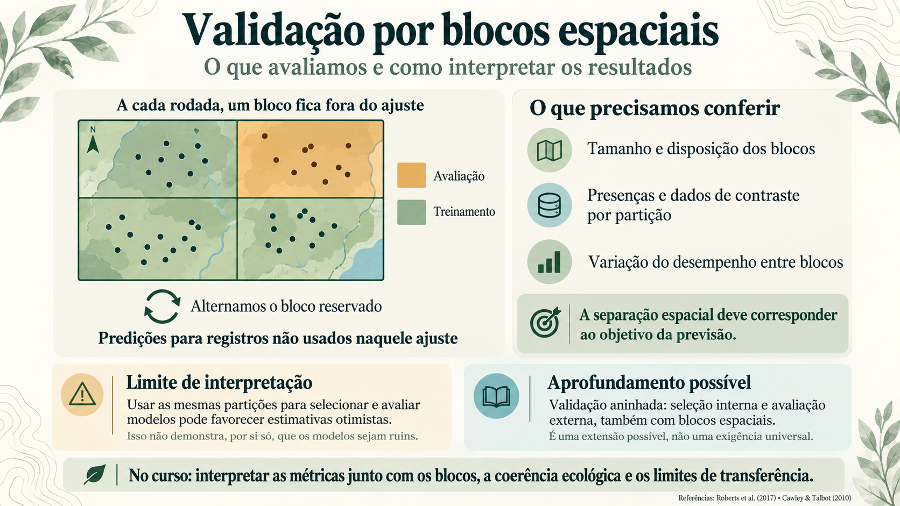

CAPÍTULO 09 · A · Assessment, planejado antes do ajuste
Separar para aprender sobre o erro
Dados próximos podem fazer a avaliação parecer mais favorável do que a transferência real.
Base no curso: slides 337–342; 338.
O primeiro teste divide registros ao acaso. Muitos pontos de teste ficam ao lado dos de treinamento. A equipe decide discutir blocos espaciais: quer saber o que acontece quando precisa prever em uma região menos próxima do que já conhece.
A validação cruzada separa partes dos dados para avaliar modelos ajustados nas demais. Com dependência espacial, uma divisão aleatória pode manter condições e localidades muito semelhantes nos dois lados. Blocos ajudam a mudar essa separação, mas seu tamanho, distribuição dos registros e cobertura ambiental determinam que tipo de generalização está sendo avaliado.

# Adiciona uma coluna com valor 1, indicando serem observações de ocorrências
presence.points.clean.filtered$pr_ab <- 1
# Define o número de partições
n_groups <- 4
# Define o grid para spatial block cross-validation
# Resolução do raster ambiental: 0.04166667 x 0.04166667
# 1 grau no equador: 111,32 km
# Resultado = cell_size * 111.32
set.seed(1968)
presence.points.partition <- presence.points.clean.filtered %>%
part_sblock(
data = .,
env_layer = predictors,
pr_ab = "pr_ab",
x = "decimalLongitude",
y = "decimalLatitude",
n_part = n_groups,
min_res_mult = 0.5/res(predictors.mask)[1],
max_res_mult = 10/res(predictors.mask)[1],
min_occ = ceiling(log2(nrow(presence.points.clean.filtered))),
# min_occ = 2,
num_grids = 20,
prop = 1
)
presence.points.model <- presence.points.partition$partA equipe confere a quantidade de presenças em cada bloco, a separação espacial e os ambientes que ficaram fora do treinamento. Uma partição com poucos pontos produz métricas instáveis. Um bloco ambientalmente novo testa também extrapolação, que deve ser reconhecida ao interpretar o desempenho.
A avaliação adotada no curso
O roteiro usa validação cruzada espacial para comparar o desempenho nas partições construídas. Os resultados apoiam a escolha das configurações e dos componentes do ensemble. A equipe registra os critérios adotados e examina tanto os resumos quanto a variação entre partições.
Essa organização tem correspondência com exemplos de Kass et al. (2024): a vinheta de invasoras usa ENMeval com blocos espaciais e métricas de validação para orientar a escolha das configurações; a vinheta de espécies raras usa SDMtune para seleção de variáveis e busca de hiperparâmetros.
# Diagnóstico depois do particionamento:
table(presence.points.model$.part)
head(presence.points.model[, c("x", "y", ".part")])Discussão
Que pergunta uma separação aleatória responde no seu caso? E uma separação espacial? Defina o alvo de generalização antes de declarar qual desenho é melhor.